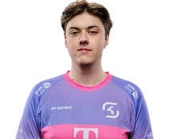

LFL · Francia
En resumen
Los 15 primeros de los 52 jugadores que la LFL (Francia) tiene en el leaderboard, ordenados por el Elo de su mejor cuenta y medidos en euw1. La tabla va de Challenger · 3470 LP a Challenger · 2455 LP. Medido el 2026-09-03.
| # | Jugador | Equipo | Rol | Elo | Victorias | KDA |
|---|---|---|---|---|---|---|
| 1 | Kofte | JL | Mid | Challenger · 3470 LP | 56 % de 973 | 3.01 |
| 2 | Nafkelah | SC | Mid | Challenger · 3318 LP | 58 % de 721 | 2.32 |
| 3 | Zicssi | SLY | Jungle | Challenger · 3249 LP | 61 % de 630 | 3.64 |
| 4 | Zoelys | GL | Support | Challenger · 3188 LP | 61 % de 748 | 3.29 |
| 5 | Dekap | VITB | Support | Challenger · 2975 LP | 54 % de 1273 | 3.13 |
| 6 | Yakkey | VITB | Bot | Challenger · 2883 LP | 56 % de 855 | 2.51 |
| 7 | Dajor | IJC | Mid | Challenger · 2835 LP | 53 % de 981 | 2.12 |
| 8 | Thayger | GL | Jungle | Challenger · 2722 LP | 62 % de 782 | 3.63 |
| 9 | Saken | ZYB | Mid | Challenger · 2702 LP | 57 % de 854 | 3.23 |
| 10 | Potent | VITB | Top | Challenger · 2614 LP | 57 % de 658 | 1.95 |
| 11 | Shift | JL | Jungle | Challenger · 2573 LP | 60 % de 604 | 3.67 |
| 12 | OMON | GL | Mid | Challenger · 2537 LP | 56 % de 1060 | 2.19 |
| 13 |  Keduii |
JL | Bot | Challenger · 2481 LP | 55 % de 1316 | 2.71 |
| 14 | xKenzuke | ES | Mid | Challenger · 2462 LP | 59 % de 593 | 2.56 |
| 15 | Yukino | KCB | Jungle | Challenger · 2455 LP | 59 % de 888 | 3.22 |
De esta liga se publica el Elo, no el Riot ID: las cuentas con nombre se indexan cuando un servidor sigue la liga, y ahora mismo eso está hecho en la LEC.
Cuántos de los jugadores de la LFL tienen cada campeón entre los que más juegan: Jayce lo llevan 12, que es el más extendido de la liga. Es presencia, no partidas — el leaderboard dice qué juega cada uno, no cuántas veces.
| Campeón | Jugadores que lo llevan | El de más Elo que lo juega |
|---|---|---|
| Jayce | 12 | Kofte |
| Ezreal | 9 | Keduii |
| Bard | 8 | Zoelys |
| Nautilus | 8 | Zoelys |
| Ambessa | 7 | Potent |
| Kai'Sa | 7 | Soldier |
| Ryze | 7 | Kofte |
| Syndra | 6 | Dajor |
Kofte (JL, Mid), con Challenger · 3470 LP. Es el más alto de los 52 jugadores de la LFL que JetaDirectaBot tiene indexados.
52 jugadores en 10 equipos, con unas 179 cuentas de SoloQ entre todos: una media de 3.4 cuentas por jugador. Sale de contar el leaderboard de la LFL, no de una estimación.
Sí. JetaDirectaBot avisa en tu canal de Discord con el campeón, el rol, el Elo y el equipo del jugador de la LFL en cuanto empieza la partida, sin que tengas que pedir nada.
ES (ES), GL (GL), IJC (IJC), JL (JL), KCB (KCB), SC (SC), SLY (SLY), TLNP (TLNP), VITB (VITB), ZYB (ZYB).
De ahora mismo. Es el rango actual de SoloQ de cada jugador, leído del leaderboard de la LFL y refrescado con los datos del bot; no es un histórico de la temporada ni el resultado de los partidos oficiales, que son cosas distintas.
JetaDirectaBot publica este aviso en tu canal de Discord —o en tu chat privado— en cuanto el jugador entra en partida, con las 20 ligas del catálogo. Gratis.
El plan gratuito sigue una liga; hasta 4 con los de pago, que es el techo real por el cupo de peticiones de Riot.